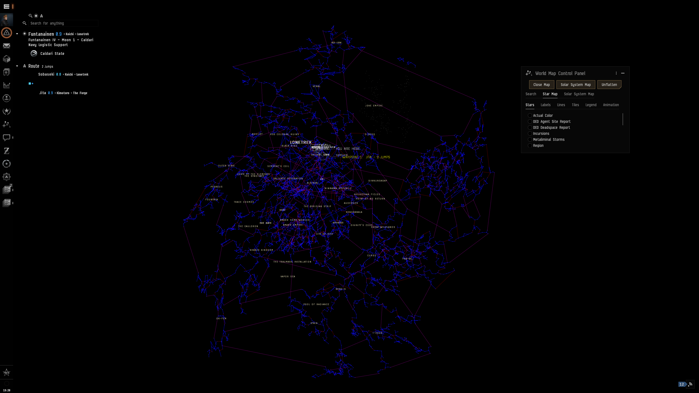
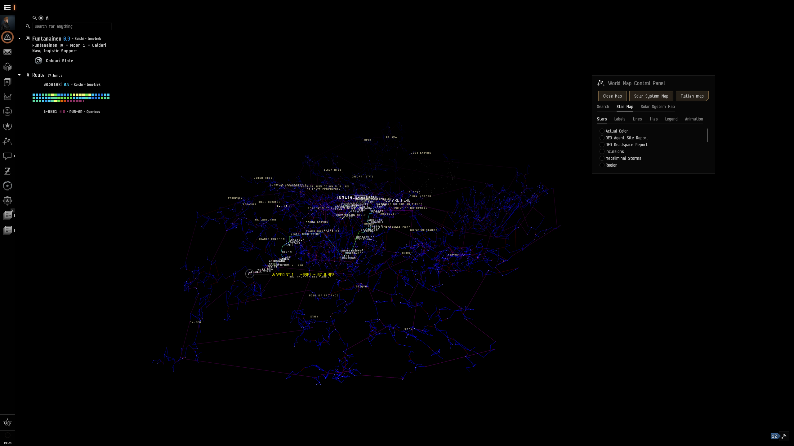
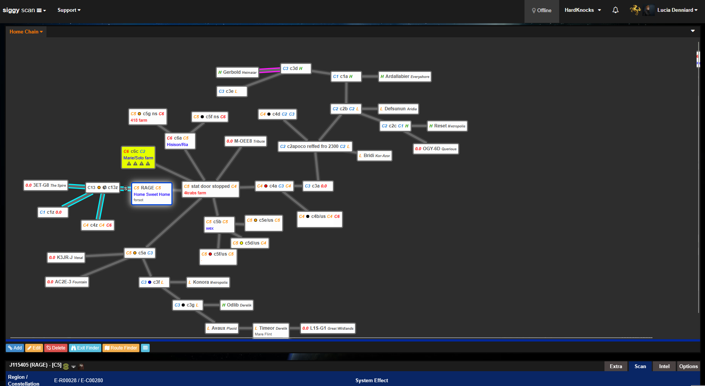
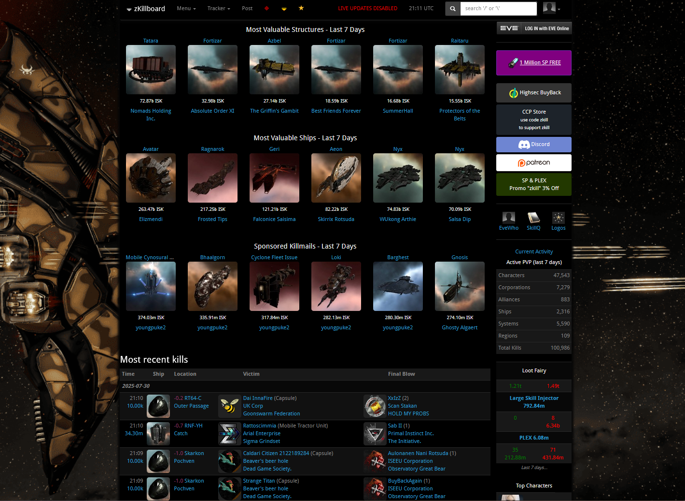

Graphs? What are they good for?
Andi Miller
1st August 2025
What’s a graph?
A structure with Nodes and Edges
What properties can they have?
Sometimes they’re directed
Sometimes they’re acyclic
Sometimes they store data
Sometimes they store a lot of data
Sometimes they have subgraphs
Wait what’s a tree then?
A tree is:
- Directed
- Acyclic
- Each node has 0 or 1 parents
This is not a tree
But we can turn it into a tree by duplicating
Introducing Hedgehogs
- Purely FP Open source Graph library
- Cats-based
- Cross-built for Scala 2 and 3
- Cross-built for JVM/JS (and Native in a branch)
Core Types - SimpleGraph
trait SimpleGraph[Id] {
// data
def nodes: Set[Id]
def edges: Set[(Id, Id)]
// graph operations
def outgoing(id: Id): Set[Id]
def inbound(id: Id): Set[Id]
def reverse: SimpleGraph[Id] // reverses all edges
// modifiers
def addNode(id: Id): SimpleGraph[Id]
def removeNode(id: Id): SimpleGraph[Id]
def addEdge(from: Id, to: Id): SimpleGraph[Id]
def removeEdge(from: Id, to: Id): SimpleGraph[Id]
...
}Core Types - DataGraph
trait DataGraph[Id, NodeData, EdgeData] extends SimpleGraph[Id] { self =>
// data
def nodeMap: Map[Id, NodeData]
def edgeMap: Map[(Id, Id), EdgeData]
// extra graph operations
def outgoingEdges(id: Id): Map[Id, EdgeData]
def incomingEdges(id: Id): Map[Id, EdgeData]
// extra modify operations
def addNode(id: Id, data: NodeData): DataGraph[Id, NodeData, EdgeData]
def addEdge(from: Id, to: Id, data: EdgeData): DataGraph[Id, NodeData, EdgeData]
...
}Included Core Algorithms
Dijkstra- routefindingConnectivity- check how many unconnected subgraphs existDag- check if a graph is a dag
Dijkstra Example
scala> Dijkstra(
DataGraph.empty[String, String, Int]
.addNode("a", "")
.addNode("b", "")
.addNode("c", "")
.addNode("d", "")
.addEdge("a", "b", 1)
.addEdge("b", "c", 2)
.addEdge("c", "d", 1)
.addEdge("a", "c", 2)
)("a", "d")
res1: Option[(Int, List[String])] = Some(value = (3, List("a", "c", "d")))Dijkstra Demo
Modules - Mermaid
scala> Mermaid.flowchart(
DataGraph.empty[String, String, Int]
.addNode("A", "Node A")
.addNode("B", "Node B")
.addNode("C", "Node C")
.addEdge("A", "B", 1)
.addEdge("B", "C", 2)
)(
extractNodeId = identity,
extractEdgeName = _.toString.some,
extractNodeName = _.some
)()
res1: String = """flowchart TD
A["Node A"]
B["Node B"]
C["Node C"]
A -->|1| B
B -->|2| C
"""
So what did I need all this for?
EVE Online
Map

Route Map

Third party tooling
- EVE has APIs for players to use
- Originally SOAP, moved to OpenAPI
- Includes map data, and where characters and assets are

Siggy
- Tool for keeping track of Wormholes, dynamically connecting systems
- 10+ years old
- Written in PHP and C#
- I had to port it to linux


ZKillboard

killmail-router
- Monitor PVP activity from zkillboard live
- Pull which solar systems are connected to our home on siggy
- Check the activity is within 10 jumps, report if it is

routes:
- name: rage-chain
filter: |-
(and
(not (== root.chain_distance.31002238 null))
(not (<= root.chain_distance.31002238 10))
(not (== root.killmail.wormhole_class 7))
)
webhook: https://discord.com/api/webhooks/redacted
template: |-
Activity ${root.chain_distance.31002238} jumps down the Rage chain https://zkillboard.com/kill/${root.killID} ${root.trumpets}
- name: my-corp
filter: |-
(let
[
(my-corp (== root.corporation_id 123456))
]
(or
(apply root.killmail.victim my-corp)
(exists root.killmail.attackers my-corp)
)
)
webhook: https://discord.com/api/webhooks/redactedBut what if we wanted to execute a graph…
Revisiting Visitors
OOP Style Visitor
FP Style Visitor
So let’s add traverse to our Graph types
trait DataGraph[Id, NodeData, EdgeData] extends SimpleGraph[Id] { self =>
// for simple graphs
def traverse[F[_]: Applicative, Id2](
f: Id => F[Id2]
): F[DataGraph[Id2, NodeData, EdgeData]]
// for data graphs
def traverseNode[F[_]: Applicative, NodeData2](
f: (Id, NodeData) => F[NodeData2]
): F[DataGraph[Id, NodeData2, EdgeData]]
}Module - dag-visitor
Visitor Demo
Graphs and LLMs
Why are they a good fit?
- Context
- Context
- Context